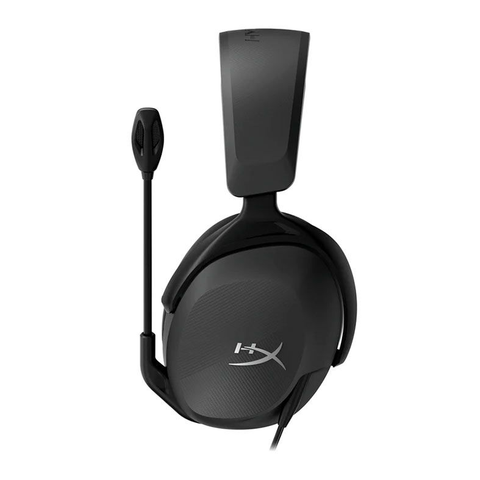

HyperX Cloud Stinger 2!

HyperX Cloud Stinger 2:
Headset leve e confortável, com som limpo e construção prática — ótimo pra longas partidas ou estudo.
R$: 429,99
Vídeo de Apresentação:
Visão Geral
HyperX Cloud Stinger 2 entrega conforto e eficiência sem frescura. Leve no peso e firme no som, ele encaixa fácil na cabeça e acompanha bem horas de jogo ou estudo. Com isolamento moderado, som equilibrado e construção robusta, é aquele fone que “serve pra tudo” sem pesar no bolso — ideal pra quem quer praticidade e bom desempenho.
Especificações Técnicas – HyperX Cloud Stinger 2
- Tipo: Over-ear fechado
- Conectividade: P2 3.5 mm (analógico)
- Resposta de frequência: ~20 Hz – 20 kHz
- Impedância: ~32 Ω
- Driver: Dinâmico, ~40 mm
- Microfone: com cancelamento básico — articulado e ajustável
- Conforto: almofadas macias + arco leve
- Compatibilidade: PC, notebooks, consoles, celular (com adaptador P2 se necessário)
- Uso recomendado: jogos, estudo, uso geral, chamadas de voz
Outros dos nossos produtos:

Teclados
Teclados mecânicos, RGB, e muito mais!

Mouses
Mouses ergonômicos, com alta precisão e design moderno.

Fones de Ouvido
Fones de ouvido com cancelamento de ruído e som de alta qualidade.